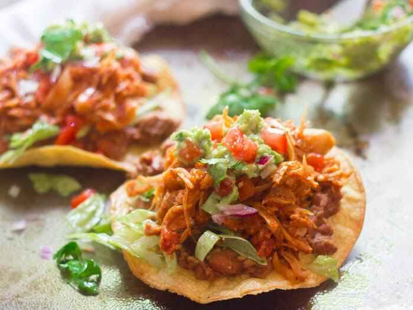
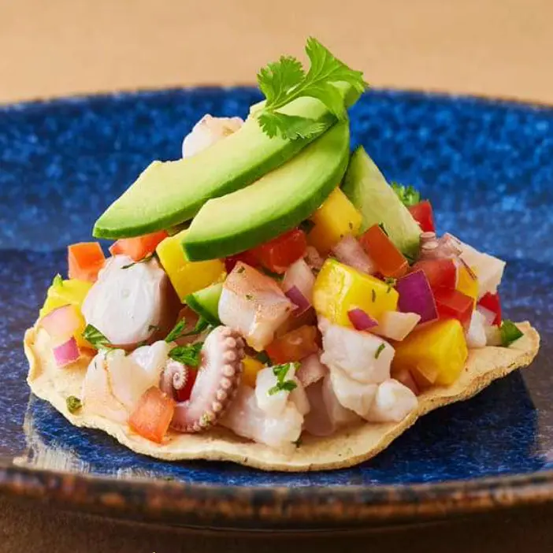
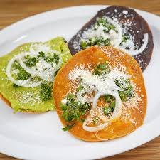
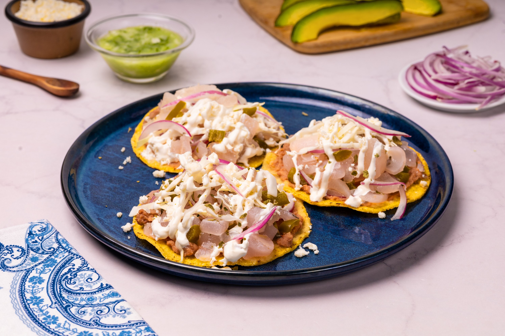
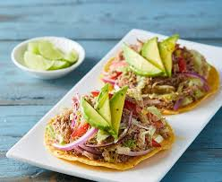
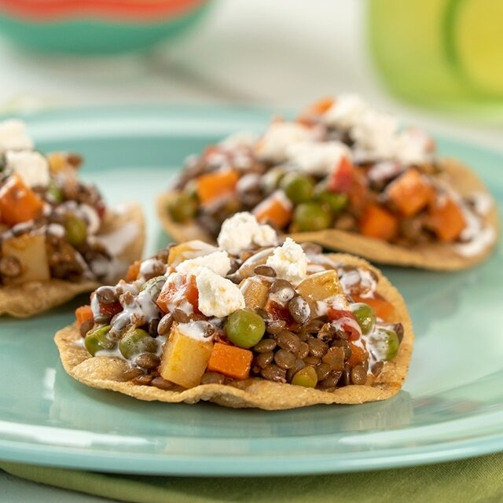

Tostadas de Tinga
Un clásico que nunca falla. Una generosa porción de tinga de pollo, decorada con crema, queso fresco, lechuga y tu salsa favorita.
Usa: Tostada CaseraNuestras tostadas son tan versátiles que puedes crear platillos increíbles. ¡Aquí te dejamos algunas ideas para que te inspires y disfrutes su sabor crujiente en casa!

Un clásico que nunca falla. Una generosa porción de tinga de pollo, decorada con crema, queso fresco, lechuga y tu salsa favorita.
Usa: Tostada Casera
Perfectas para el calor. Prepara tu ceviche de pescado o camarón con limón, cilantro, tomate y cebolla. Acompáñalo con aguacate.
Usa: Tostada Roja
La botana ideal para compartir. La gran resistencia de nuestras Tostadas Caseras es perfecta para dipear en guacamole o frijoles refritos.
Usa: Tostada Casera
Un antojito tradicional. Patitas de cerdo en escabeche sobre una cama de frijoles, con mucha crema, queso y lechuga romana.
Usa: Tostada Roja
Fresco y nutritivo. Carne de res deshebrada fría, mezclada con tomate, cebolla, cilantro y cubitos de aguacate.
Usa: Tostada Casera
El sabor de hogar. Picadillo de carne molida con papas y zanahoria. El toque de chile de la tostada roja realza el sabor del guiso.
Usa: Tostada Roja